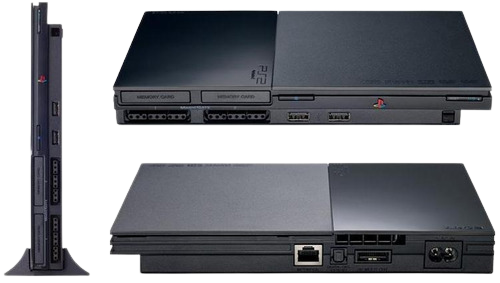

Versões do PS2
Playstation 2 Slim
As primeiras versões desse modelo eram feitas com leitor e plastico de baixa qualidade tinham superaquecimento e até alguns games não rodavam neles.
Playstation 2 Fat (Original)

O PS2 fat ou tijolão como era conhecido, chamado pela sony de (modelo original). É o maior em tamanho, com mais entradas de ar e também um cooler que da uma melhor refrigeração.